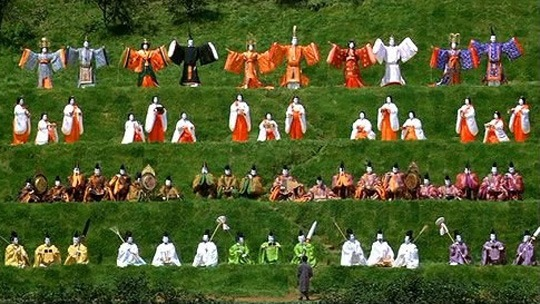

 大师黑泽明的电影，说来说去最喜欢的还是这部。早些时候依树送我一本《蛤蟆的油》，看过一半，已经对这位大师更加崇敬了。《梦》是他晚年的得意之作，黑泽明在其中运用大量的长镜头，超脱出情节的设置，将八个梦境以蒙太奇的形式展现在观众面前。 第一个梦：太阳雨。孩子在有太阳雨的日子偷看了狐狸娶亲，因而触犯了狐狸的禁忌，甚至被逐出家门。为寻求宽恕，孩子携匕首走到了开满鲜花的彩虹尽头。 第二个梦：桃园。三月三“桃偶节”，桃树们在桃园上演了一场能乐表演。曲终人散，孩子走近时才发现桃园只剩下残留的截截树桩。 第三个梦：雪女。暴风雪，登山队员在艰难的行走中一个接一个倒下了。雪女翩然而至，抚慰严寒困冻的人们，“雪是温的冰是烫的”。唯有队长最终推开了温柔的陷阱，成功地活了下来。 第四个梦：隧道。战争结束，作为唯一生还者的退伍军官却在返乡路上的一条隧道出口见到了全体死去的战友。生与死的会面在这个隧道出口纠缠成难以言喻的痛苦。死的人去了，生的人却将永远伤痛。 第五个梦：乌鸦。青年在美术馆欣赏梵高的画作，却意外走进梵高的绘画世界里。穿行在大片麦田和乌鸦之间，青年看见大师梵高如火车头般拼命地画着，他唯有脱帽向大师致敬。 第六个梦：红色富士山。核灾难后的富士山，噩梦般地燃烧着。绝望的人们只能选择跳海自尽。 第七个梦：哭泣的魔鬼。延续上一个梦，核灾难后的废墟生长了基因突变的怪异植物。旅行者遇见哭泣的食人魔，才知道即使是食人魔也已经是求生不能，求死不得。 第八个梦：水车之村。世外桃源般的小村庄，水车在清澈的河面上缓缓转着。淳朴的村民以最原始最自然的方式生存着。这里才是黑泽明理想的彼岸吧，而大师也已追随着这样的梦离我们远去了。 童话般的景象里，大师留给我们的是关于人类整体命运的思考。或许你会觉得黑泽明对于《梦》的阐释过多，那就当作是一位逝去的老者留给后人最后的喋喋不休吧，他只是想说的太多，而现在，只有梦还在了。